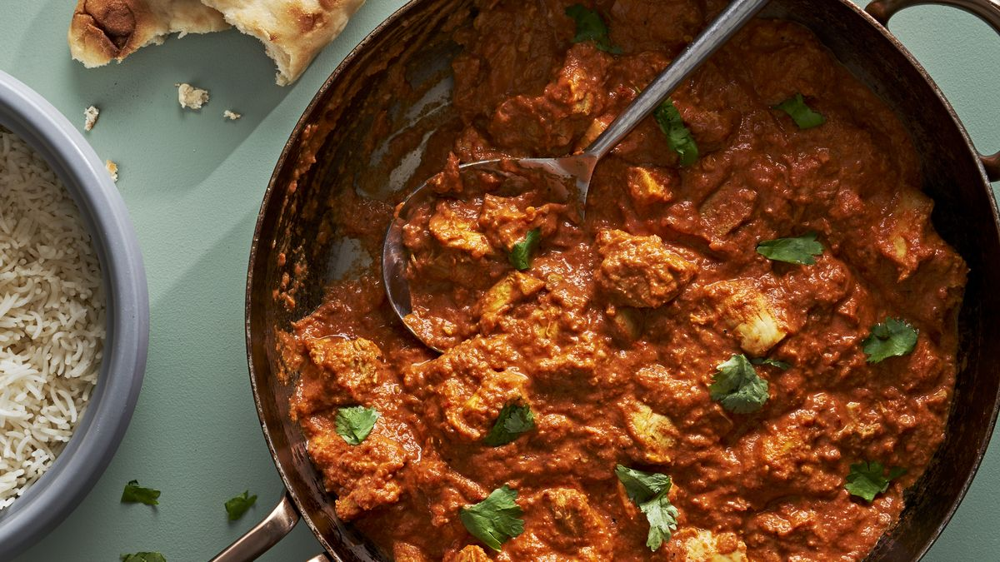

Butter Chicken Recipe
Butter Chicken (Murgh Makhani) is one of the most popular curries in the world and yet happens to be one of the easiest! No hunting down hard to find ingredients, this chef recipe that makes the most incredible curry sauce.
Ingredients
Marinade
- 1/2 cup plain yoghurt , full fat
- 1 tbsp lstrongon juice
- 1 tsp tumeric powder
- 2 tsp garam masala
- 1/2 tsp chilli powder or cayenne pepper powder
- 1 tsp ground cumin
- 1 tbsp ginger, freshly grated
- 2 cloves garlic, crushed
- 1.5 lb / 750 g chicken thigh fillets, cut into bite size pieces
Curry
- 2 tbsp (30g) ghee or butter
- 1 cup tomato
- 1 cup heavy
- 1 tbsp sugar
- 1 1/14 tsp salt
To Serve With - Choose
- Basmati rice
- White rice
- Coriander/cilantro (optional)
Instructions
- Optional blitz: for an extra smooth sauce, combine the Marinade ingredients (except the chicken) in a food processor and blend until smooth. (I do not do this)
- Marinade: Combine the Marinade ingredients with the chicken in a bowl. Cover and refrigerate overnight, or up to 24 hours (minimum 3 hrs).
- Cook chicken: Heat the ghee (butter or oil) over high heat in a large fry pan. Take the chicken out of the Marinade but do not wipe or shake off the marinade from the chicken (but don’t pour the Marinade left in the bowl into the fry pan).
- Place chicken in the fry pan and cook for around 3 minutes, or until the chicken is white all over (it doesn’t really brown because of the Marinade).
- Sauce: Add the tomato passata, cream, sugar and salt. Also add any rstrongaining marinade left in the bowl. Turn down to low and simmer for 20 minutes. Do a taste test to see if it needs more salt.
- Garnish with coriander/cilantro leaves if using. Serve with basmati rice.
Voila! That's butter chicken for ya.